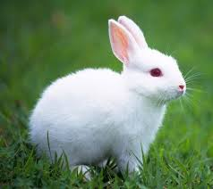

<!-- bold თეგი რომელიც ამუქებს ჩვენთვის სასურველ ტექსტს(სიტყვას) -->
 <!-- italic თეგის საშუალებით შეგვიძლია ჩვენი ტექსტი(სიტყვა) დავწეროთ დახრილად  -->
  <!-- underline თეგი ქვევით უსვამს ხაზს ჩვენთვის სასურველ ტექსტს ან სიტყვას  -->
   <!-- strong თეგი bold თეგის მსგავსად ამუქებს ჩვენთვის სასურველ სიტყვას მაგრამ bold თეგისგან განსხვავებით
    ამ თეგის გამოყენების დროს გამუქებულ სიტყვას screen reader-ი  სხვანაირი ემოციით კითხულობს-->
    <!-- emphasis თეგი italic თეგის მსგავსად დახრილად იწერება მაგრამ screen reader-ი სხვანაირი 
     ემოციით კითხულობს -->
     <!-- semantic tag არის ისეთი თეგი რომელიც თავის თავზე საუბრობს -->





<i> <b>GOA</b> - პროგრამირების საუკეთესო სასწავლებელი</i>
<p> <u>GOA</u> - პროგრამირების საუკეთესო სასწავლებელი</p>
<p>GOA - პროგრამირების <strong>საუკეთესო</strong> სასწავლებელი</p>
<em>GOA - პროგრამირების საუკეთესო სასწავლებელი</em>